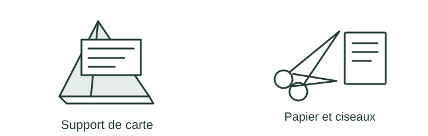

OBSERVER · EXPÉRIMENTER · EXPLIQUER
Le support passe les tests
Regarde les résultats des deux prototypes. Chaque critère doit être examiné séparément.

✎ Garde ta feuille à côté de toi.Prévois sur papier → manipule → observe → rédige sur papier.
Des observations pour expliquer
- Q1–Q2 : remplis ton tableau exigence/résultat/décision sur papier.
- Q4 : prépare une présentation avec une preuve et une limite.
Appuie ton explication sur une valeur, un changement observé ou une comparaison. Distingue ce que montre le modèle et ce qui reste à vérifier.